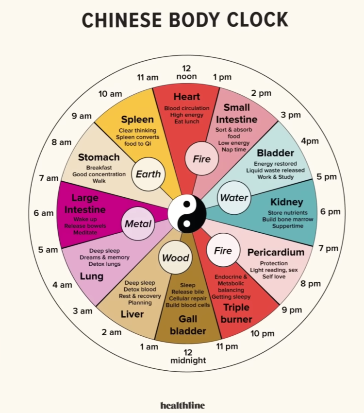

| Khung giờ | Cơ quan | Nên làm gì |
|---|---|---|
| 11 giờ tối – 1 giờ sáng | Túi mật (Gall bladder) | Ngủ sâu, tiết dịch mật, tế bào tự phục hồi, tạo hồng cầu |
| 1 – 3 giờ sáng | Gan (Liver) | Ngủ sâu, thải độc máu, cơ thể nghỉ ngơi & phục hồi, "lên kế hoạch" |
| 3 – 5 giờ sáng | Phổi (Lung) | Ngủ sâu, hay mơ & ghi nhớ giấc mơ, thải độc phổi |
| 5 – 7 giờ sáng | Đại tràng (Large Intestine) | Thức dậy, đi vệ sinh (thải phân), thiền |
| 7 – 9 giờ sáng | Dạ dày (Stomach) | Ăn sáng, tập trung tốt, đi bộ |
| 9 – 11 giờ sáng | Lá lách (Spleen) | Tư duy minh mẫn, lá lách chuyển hóa thức ăn thành khí (Qi) |
| 11 giờ trưa – 1 giờ chiều | Tim (Heart) | Tuần hoàn máu, năng lượng cao, ăn trưa |
| 1 – 3 giờ chiều | Ruột non (Small Intestine) | Phân loại & hấp thụ dinh dưỡng, năng lượng thấp, nên chợp mắt |
| 3 – 5 giờ chiều | Bàng quang (Bladder) | Phục hồi năng lượng, đào thải chất lỏng dư thừa, làm việc & học tập |
| 5 – 7 giờ chiều | Thận (Kidney) | Tích trữ dưỡng chất, tạo tủy xương, ăn tối |
| 7 – 9 giờ tối | Màng ngoài tim (Pericardium) | Bảo vệ tim, đọc sách nhẹ, yêu bản thân |
| 9 – 11 giờ tối | Tam tiêu (Triple Burner) | Cân bằng nội tiết & chuyển hóa, bắt đầu buồn ngủ |